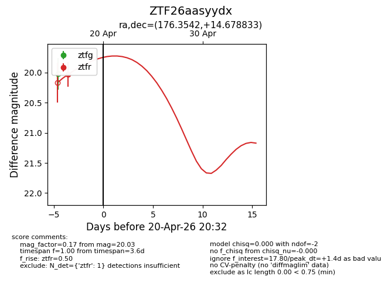
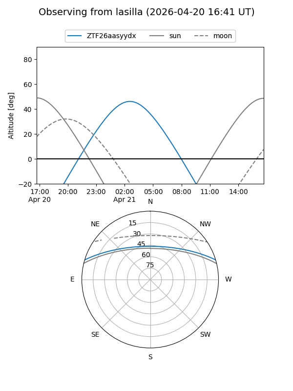
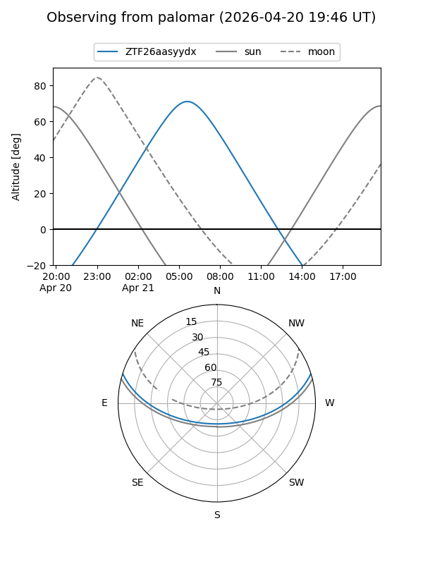

ZTF26aasyydx
Target ZTF26aasyydx at 2026-04-20 20:42
Aliases and brokers:
FINK: link
Lasair: link
ALeRCE: link
alt names
ZTF26aasyydx (ztf,fink_ztf)
Coordinates:
equatorial (ra, dec) = 176.3542,+14.67883
equatorial (HMS+DMS) = 11:45:25.00,+14:40:43.80
galactic (l, b) = (248.6202,+70.22192)
Flags:
Photometry:
last ztfr=20.03
1 ztfr detections
Lightcurve

Visibility


Additional plots